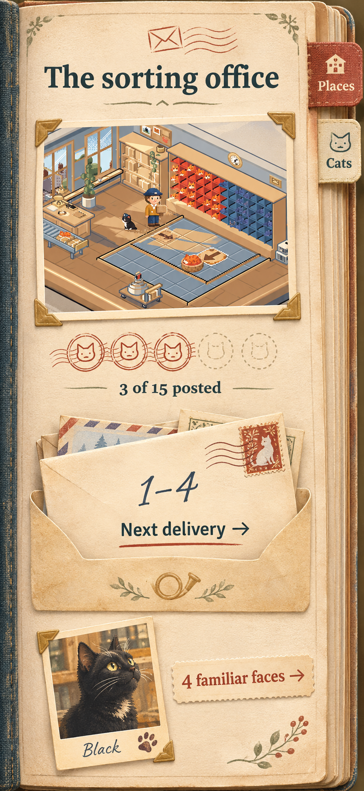
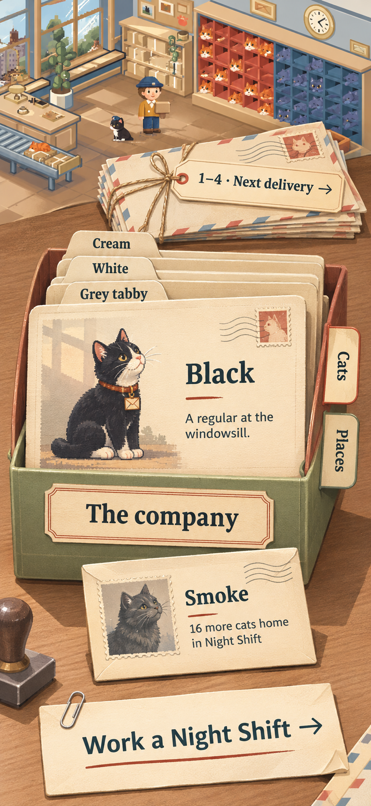
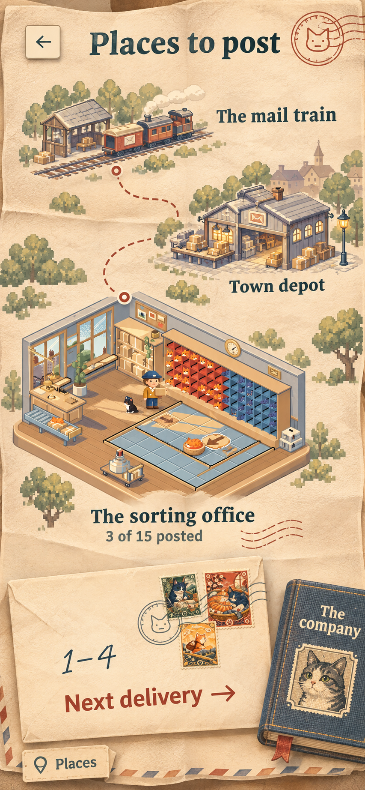

The album & the journey
Three ways to keep your deliveries and familiar faces.

1. The bound album
One kept object holds the journey and the familiar faces. Places, chapters and cats each have a leaf in the same book.
Returning to play
The book opens at your current place. The fresh letter in its pocket is the action: Continue when a run is unfinished, Next delivery when the last one is home. The index is always within reach.
After a delivery
The addressed letter is filed behind the pocket. A chapter earns its cancellation when complete; the whole place earns its mark after every delivery there. A completed postcard becomes a keepsake you can revisit.
Meeting the cats
The Cats bookmark opens portrait leaves. Each cat gets a recognisable pose and a small observation. A newly arrived cat receives a mounted portrait, with its company reflected in the Box Room.
Phone and iPad
Phone: one readable leaf and a direct place/chapter index. iPad or Mac: a facing spread, with the postcard on one leaf and the active packet on the other. Turning pages is optional; choosing a place is direct.
The trade-off: one coherent object, with a risk of making the book carry too many jobs. The ready letter must keep its priority.
Refinement I would make: quieter trim and wear, portraits derived from the game’s art, and a clearer separation between the five-delivery chapter marks and the fifteen-delivery place total. I would remove empty outlined reward marks.
How the full journey fits
- Six place leaves, with the relevant chapter packet opened inside each.
- The current delivery stays exposed; delivered letters remain easy to browse and replay.
- Cat portraits have their own indexed leaves, so collection does not become hundreds of page swipes.

2. The correspondence box
The letters hold the work. The portrait cards hold the company. Both belong on the same sorting desk.
Returning to play
One current letter sits at the front of the delivery bundle. It opens the saved route or the next delivery. The Places index selects a destination; completed letters are filed behind their chapter divider.
After a delivery
The finished letter slips into the delivered packet and the next letter comes forward. Completing a chapter cancels its divider; completing a place cancels its postcard. The desk quietly accumulates history.
Meeting the cats
The company is an indexed file of individual portraits. Inspecting a card gives that cat room to be a character. The incoming card states its Night Shift condition. When the cat arrives, its card joins the file and the next invitation comes forward.
Phone and iPad
Phone: focus on one file or packet at a time, with generous named tabs and an easy way back to the current letter. iPad or Mac: the open company file and delivery bundle can sit alongside each other.
The trade-off: the clearest separation of the two progression systems, with two objects to learn. The indexes must make browsing quick; flicking through a stack cannot be the only navigation.
Refinement I would make: keep the portrait dominant, reduce paper distress, and make the incoming-cat condition a quiet, readable invitation. Reserve physical motion for opening, filing and a genuine arrival.
How the full journey fits
- Place dividers lead to chapter packets, rather than one hundred loose cards in a single pile.
- The company has a direct coat index; later additions can extend the file without changing the main desk.
- Only one letter is active. The stack of finished post is history, rather than several simultaneous saved runs.

3. The fold-out route
The journey becomes a little world to explore. The letter at your current place keeps the next task certain.
Returning to play
The route centres on your current destination, with its ready letter exposed. Open that letter to continue. A direct Places index makes jumping to a known destination just as easy as browsing the illustration.
After a delivery
Work is recorded within the current place’s packet. Finishing a chapter leaves an ink mark there. Finishing the place gives its postcard a full cancellation and brings the next destination into focus.
Meeting the cats
The portrait album is a separate companion at the edge of the route. Night Shift arrivals belong there. Story geography never implies that a cat is unlocked by reaching a particular building.
Phone and iPad
Phone: current destination and next letter, with neighbouring places visible around the folds. iPad or Mac: a broader spread reveals more of the postal journey, while the current letter retains its visual priority.
The trade-off: the strongest feeling of adventure, with the largest illustration and navigation commitment. A direct index and thoughtful centring are essential to keep the map easy to use.
Refinement I would make: use original destination art with a consistent scale, quieter map ink and clear reached/unreached states. The geography can stay loose. The six places carry the journey; the hundred deliveries never become a path of dots.
How the full journey fits
- The route has six major destinations, each opening its existing chapters and delivery packet.
- Later places emerge through the folds, with their own recognisable character.
- Completed places remain directly accessible for revisits; the current letter provides the fastest return to play.
The same rules, clearly kept
All three directions should make these events understandable without adding another reward system.
| Return midway | The current letter says Continue and restores the same paused board. |
|---|---|
| Deliver a route | Earned Delivered, Tidy and First post postage belongs to that letter. |
| Complete a chapter or place | The chapter divider or place postcard receives its cancellation. |
| Meet a new coat | The engine’s Night Shift total brings a portrait into the company and its cat into the Box Room. |
| Today’s post | A separate dated letter on the desk. It stays outside the story’s sequence. |